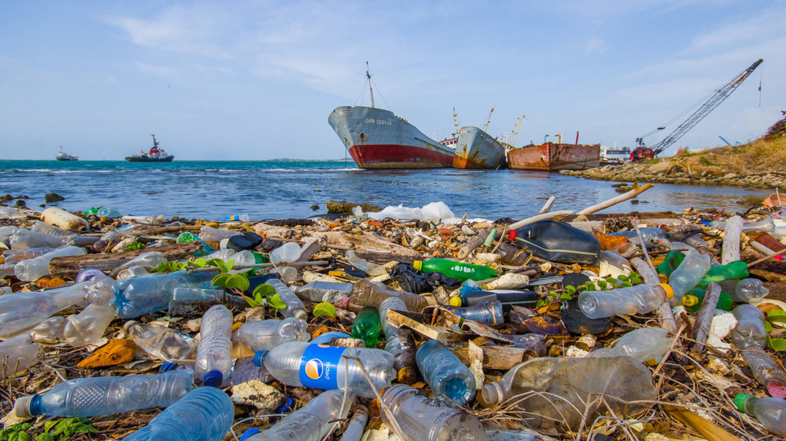

Загрязнение пресных вод — попадание различных загрязнителей в воды рек, озер, подземных вод. Происходит при прямом или непрямом попадании загрязнителей в воду в отсутствие качественных мер по очистке и удалению вредных веществ. В большинстве случаев загрязнение пресных вод остаётся невидимым, поскольку загрязнители растворены в воде. Но есть и исключения: пенящиеся моющие средства, а также плавающие на поверхности нефтепродукты и неочищенные стоки. Есть несколько природных загрязнителей. Находящиеся в земле соединения алюминия попадают в систему пресных водоёмов в результате химических реакций. Паводки вымывают из почвы лугов соединения магния, которые наносят огромный ущерб рыбным запасам.
